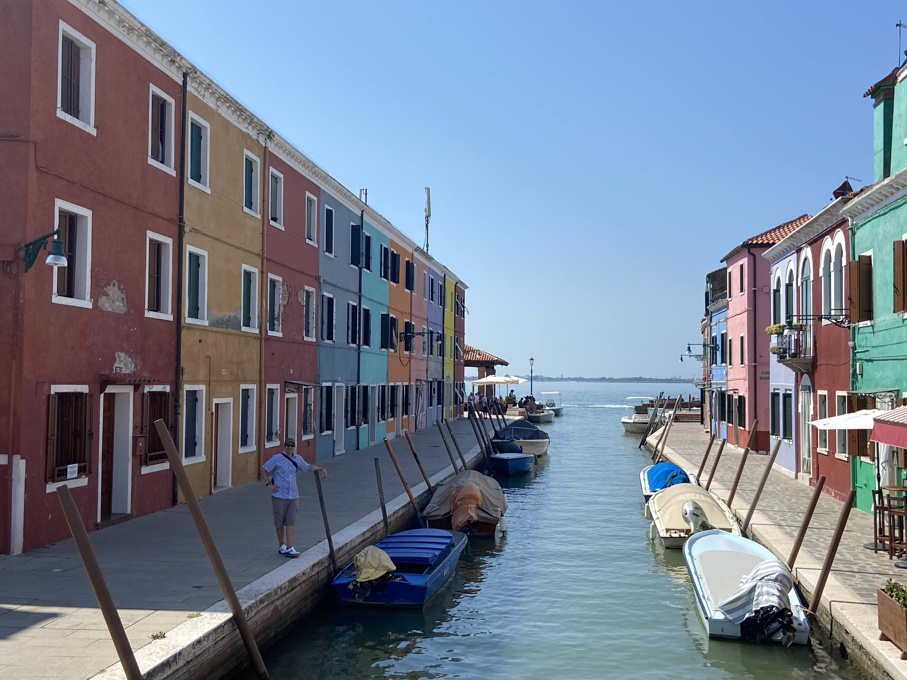

Essential Travel Tips
Plan your trips efficiently, pack smart, and enjoy every moment!
Travel Tips for Beach Vacationing
- Pack Sunscreen – Protect your skin and the environment.
- Stay Hydrated – The sun and saltwater can dehydrate you faster than you think.
- Bring a Waterproof Phone Case – Protect your phone from sand and water.
- Wear UV-Protective Sunglasses – The reflection from the water can be intense.
- Pack a Lightweight Beach Bag – Keep essentials organized.
- Use a Sand-Resistant Towel or Mat – Avoid sand sticking to you.
- Arrive Early for the Best Spot – Get the best location on the beach.
- Bring Water Shoes – Protect your feet from rocks or sea creatures.
- Watch for Strong Currents – Swim parallel to shore if caught in one.
- Pack Aloe Vera – Useful for soothing sunburns.
- Store Valuables Securely – Consider a waterproof pouch or make use of hotel vault.
- Bring a Snorkel Set – Explore underwater life if the water is clear.
- Respect Marine Life – Don’t touch coral or disturb sea creatures.
- Dedicate a day to explore the city - Try different excursions or tours.
- Try Local Cuisine – Experience the local flavors and culture.
- Take Photos – Don't forget to capture the moment to be able to look back on the memories.
- Stay Safe – Be aware of your surroundings and follow local guidelines.
- Enjoy the Sunset – Relax and enjoy the beauty of nature.



Travel Tips for Exploring Europe
- Pack Light and Use a Carry-On – Avoid heavy luggage on cobbled streets.
- Wear Comfortable Walking Shoes – You'll be walking a lot.
- Use Public Transportation – Trains and metros are more efficient than taxis.
- Get a SIM Card or eSIM – Makes navigation and translations easier.
- Validate Your Train or Metro Ticket – Avoid fines.
- Carry a Reusable Water Bottle – Many European cities have free fountains.
- Know the Local Emergency Numbers – 112 works for most of Europe.
- Learn Basic Local Phrases – Even simple words help.
- Watch Out for Pickpockets – Be especially careful in crowded areas.
- Eat Like a Local – Avoid touristy restaurants.
- Check Free Museum Days – Many museums have free entry on certain days.
- Use an Offline Map – Download Google Maps for offline use.
- Be Mindful of Dining Hours – Some countries eat later.
- Respect Local Customs & Dress Codes – Some churches require modest clothing.
- Check for City Passes – Save money on transport and attractions.
- Be Prepared for Different Electrical Outlets – Bring an adapter.
- Don't Rely on Credit Cards Everywhere – Carry some cash.
- Book Tickets in Advance – Popular attractions sell out fast.
- Take Photos – Don't forget to capture the moment to be able to look back on the memories.